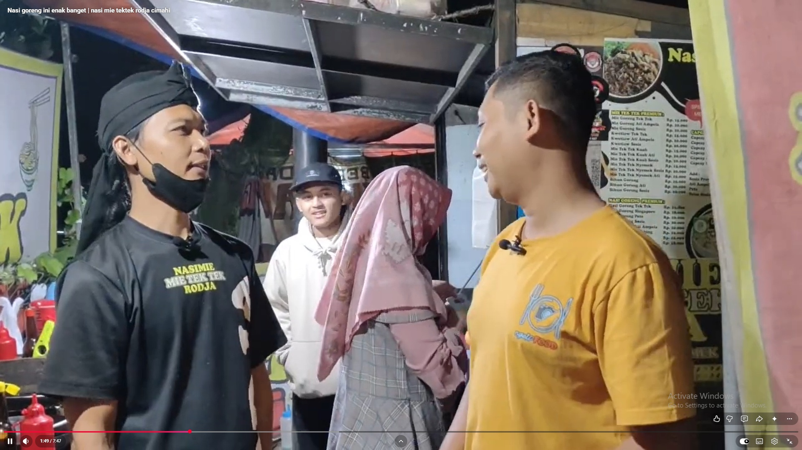

NASI · MIE · RASA NUSANTARA
Rasa yang akrab.
Bumbu yang rahasia.
Dari nasi goreng sampai mie tek-tek, hadir dengan racikan khas Nasimie Roja untuk menemani waktu makanmu.
*Angka mengikuti materi promosi yang diberikan dan dapat diperbarui.


cerita rumahan.
✦
CERITA KAMI
Sederhana dalam sajian.
Istimewa dalam rasa.
Nasimie Roja hadir untuk menemani momen makan lewat sajian nasi dan mie bercita rasa Nusantara. Kami percaya, hidangan yang enak tidak harus rumit—cukup racikan yang tepat, disajikan dengan sepenuh hati.
Temukan menu favoritmu, nikmati bersama orang terdekat, dan jadikan waktu makan sebagai momen yang ditunggu.
Kunjungi Nasimie RojaSECUIL KELEZATAN
Rasa dalam gambar.
Suasana dan sajian yang mewakili semangat makan enak ala Nasimie Roja.


MAMPIR, YUK
Ketemu di Roja.
Datang langsung untuk menikmati sajian favorit, atau hubungi kami untuk menanyakan pesanan.
LAPAR SUDAH MENYAPA?
Temukan menu yang
bikin balik lagi.
Pilih favoritmu dan lanjutkan pesanan lewat WhatsApp.